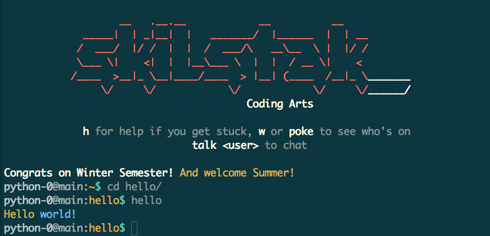

Hello world is a famous program written by millions in dozens if not hundreds of programming languages. It's a great way to start.
Let's assume you have never heard of coding before. If you have you can skip or maybe you want read Paul Ford's excellent article:
Coding is when humans write instructions for computers to use. The instructions are like recipes. The recipes are called algorithems. Computers really only speak one language, machine language. Since each computer machine is different computers speak different machine languages. Remember C-3PO from Star Wars? His job was talking between machines. (A protocol is a way to communicate.) We may not have protocol droids like 3PO yet, but many languages have been created with interpreters and other stuff to help humans tell different types of computers how to do the same things.

These days most all code is written.
A character is a letter, number, symbol or space that you can type.
A text file is a file with letters, numbers, spaces and other characters in it.
Source code is the text that goes into one or more text files that make up your program. Sometimes these files can be run as a program by themselves. These are called scripts. Sometimes source code files are turned into other files that the computer can understand better and faster than what you could ever type in. Making these computer-friendly files is called compiling your code. Computers can understand some compiled code directly and some still needs an interpreter. Just like humans, computers sometimes need help interpreting one language into something they understand. Like in real-life, it is faster for the computer when an interpreter is not needed, but sometimes speed isn't as important as being able to easily work with code that humans and many different types of computers can understand.
A script is source code that can be run as a program.
An editor is a app used to change stuff in a file, for example, to create
a new hello program or edit a server.properties file to change
a Minecraft world to super flat.
A screen-oriented editor is an editor that doesn't need a mouse to use. Since we are writing all our programs from a Linux terminal (like professionals) we will use vi (or vim) a famous editor used by great programmers since before the Internet was invented. vi is on every UNIX/Linux computer there is. This makes it a very useful tool to learn.

vi is an ancient text editor, almost the first, (which I think was
ed). Ironically it holds its position as the Stradivarius of editors
— especially now that vim has improved it. Its power comes from
its ubiquity. You can find vi on every UNIX/Linux/Solaris/AIX/BSD/Mac
system in the world by default (no it isn't on Windows, which is all you
really need to know about Windows to choose not to use it as a developer
unless forced).
Here are the survival essentials you need to master at this point. You will learn many more as you grow into this powerful editor:
vi hello - create and open a new file called helloi - switch to INSERT mode (look in bottom left)<arrows> - move around (easiest for beginners)<esc> - escape out of INSERT<esc>u - undo, which you can repeatZZ or :q - save and exitZQ or :q! - just quit without saving:w - save without exitingThe secret for beginners is the arrows. Eventually you will use INSERT
mode less and less.
Now you are ready to start creating files with vi.